1. 搭建开发环境( mac 版)
Mac 系统默认集成了很多开发工具,其中就包括 php 所需要的一些软件工具.
下面我们将搭建最简单的 php 开发环境,每一步都会验证上一步的操作结构,请一步一步跟我一起搭建吧!
1.1. web 服务器之 apache
apache 是一款 web 服务器,用于运行 php 文件,除了 apache 外也可以是 nginx 服务器.
默认情况下
mac已经预装了apach服务,自然不用nginx服务器了.
现在什么也没有配置的情况下,直接启动 apache 服务器看一下能否正常运行.
$ sudo apachectl start
1.1.1. 常用命令
- 查看
apache版本
语法:
apachectl -v
示例:
$ apachectl -v
Server version: Apache/2.4.34 (Unix)
Server built: Feb 22 2019 19:30:04
- 启动
apache服务
语法:
sudo apachectl start
示例:
$ sudo apachectl start
Password:
- 停止
apache服务
语法:
sudo apachectl stop
示例:
$ sudo apachectl stop
- 重启
apache服务
语法:
sudo apachectl restart
示例:
$ sudo apachectl restart
1.1.2. 安装路径
apache默认安装于/private/etc/apache2目录,属于系统隐藏目录,可以在终端中直接进入也可以在访达中直接前往文件夹.
示例:
$ tree /private/etc/apache2
/private/etc/apache2
├── extra
│ ├── httpd-autoindex.conf
│ ├── httpd-autoindex.conf~previous
│ ├── httpd-dav.conf
│ ├── httpd-dav.conf~previous
│ ├── httpd-default.conf
│ ├── httpd-default.conf~previous
│ ├── httpd-info.conf
│ ├── httpd-info.conf~previous
│ ├── httpd-languages.conf
│ ├── httpd-languages.conf~previous
│ ├── httpd-manual.conf
│ ├── httpd-manual.conf~previous
│ ├── httpd-mpm.conf
│ ├── httpd-mpm.conf~previous
│ ├── httpd-multilang-errordoc.conf
│ ├── httpd-multilang-errordoc.conf~previous
│ ├── httpd-ssl.conf
│ ├── httpd-ssl.conf~previous
│ ├── httpd-userdir.conf
│ ├── httpd-userdir.conf~previous
│ ├── httpd-vhosts.conf
│ ├── httpd-vhosts.conf~previous
│ └── proxy-html.conf
├── httpd.conf
├── httpd.conf.pre-update
├── httpd.conf~previous
├── magic
├── mime.types
├── original
│ ├── extra
│ │ ├── httpd-autoindex.conf
│ │ ├── httpd-dav.conf
│ │ ├── httpd-default.conf
│ │ ├── httpd-info.conf
│ │ ├── httpd-languages.conf
│ │ ├── httpd-manual.conf
│ │ ├── httpd-mpm.conf
│ │ ├── httpd-multilang-errordoc.conf
│ │ ├── httpd-ssl.conf
│ │ ├── httpd-userdir.conf
│ │ ├── httpd-vhosts.conf
│ │ └── proxy-html.conf
│ └── httpd.conf
├── other
│ └── php7.conf
└── users
└── Guest.conf
5 directories, 43 files
如果想要修改项目部署路径以及服务器端口等自定义配置,可打开 /private/etc/apache2/httpd.conf 文件进行编辑,如果权限不足,要么提升权限要么复制到别处修改好再替换掉原来的配置文件.
配置文件一旦修改,请一定要重启服务器,不然并不会生效!
vim搜索文件内容时临时高亮设置::set hlsearch,取消高亮设置::set nohlsearch.
- 修改项目部署路径
DocumentRoot: 默认部署路径于/Library/WebServer/Documents
终端输入 vim 命令查找并编辑目标节点.
$ vim /private/etc/apache2/httpd.conf
输入
vim /private/etc/apache2/httpd.conf进入命令行模式,输入:/DocumentRoot从头搜索文件内容,紧接着输入n表示查找下一项匹配字符,N表示查找上一项匹配内容.
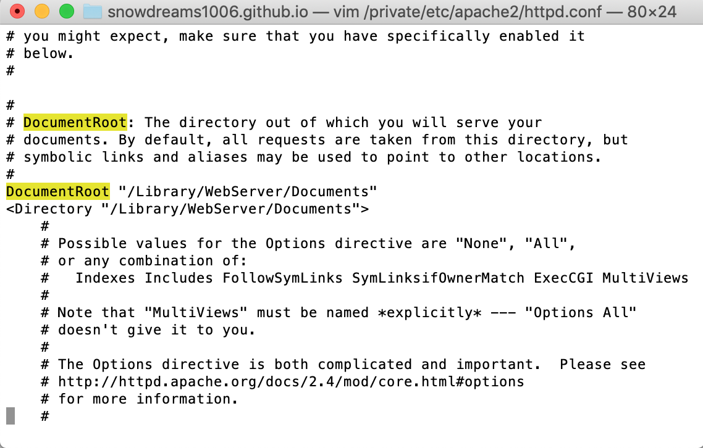
如果不熟悉
vim语法也可以选择熟悉的编辑器打开httpd.conf配置文件进行修改配置.
- 修改项目部署端口
Listen: 默认监听端口 80
如果端口冲突的话,可以修改成其他端口,80 端口的好处在于可以直接访问服务器地址而不用显示带上端口号.
# 等价于 http://localhost:80
http://localhost
# 等价于 http://127.0.0.1:80
http://127.0.0.1
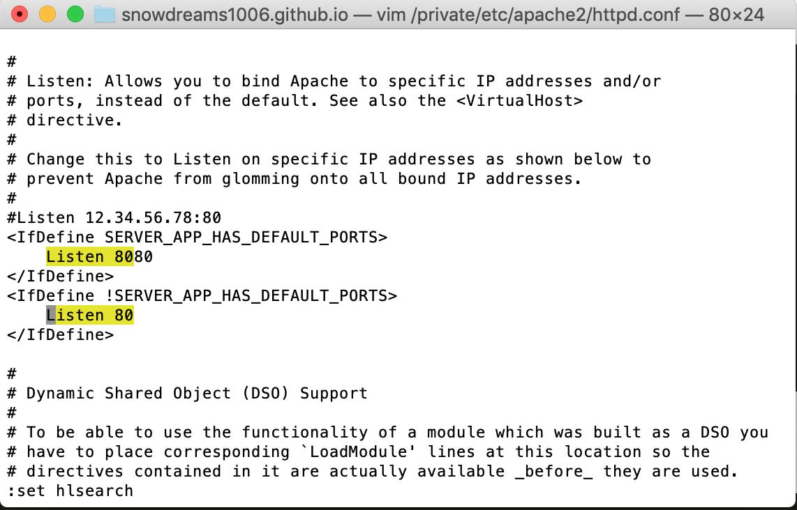
1.1.3. 部署路径
默认情况下,apache 的部署路径位于 /Library/WebServer/Documents ,除非你更改了 httpd.conf#DocumentRoot 的节点配置.
$ tree /Library/WebServer/Documents
/Library/WebServer/Documents
├── PoweredByMacOSX.gif
├── PoweredByMacOSXLarge.gif
├── index.html.en
└── index.html.en~orig
0 directories, 4 files
当然你可以通过访达直接前往 /Library/WebServer/Documents 目录或者 open /Library/WebServer/Documents 直接调用内置程序打开目录.
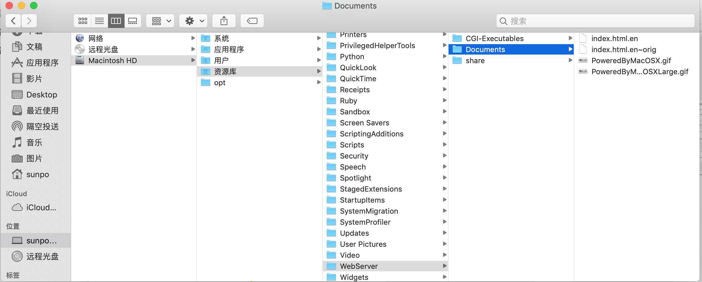
如果非要一步一步找到部署路径,打开 访达 后选择左侧最下方的本地光盘(个人用户名称),然后依次选择
Machintosh HD > 资源库 (Library) > WebServer > Documents
1.2. 世界上最好的语言之 php
php 在行业内赢得"世界上最好的语言"称号,自嘲为"拍簧片".不管怎样,既然我们决定 pai(拍)huang(簧)pian(片) ,那总要配置一下 php 的基本环境吧!
Mac 系统一如既往内置了 php 环境,不用我们费心去安装 php 了,现在看一下 php 的基本信息吧!
$ php -version
PHP 7.1.23 (cli) (built: Feb 22 2019 22:08:13) ( NTS )
Copyright (c) 1997-2018 The PHP Group
Zend Engine v3.1.0, Copyright (c) 1998-2018 Zend Technologies
php 是一种服务端脚本解释性语言,依赖于 web 服务器进行解析,所以 php 想要正常工作离不开上一步配置的 apache 服务器.
还记得 apache 配置文件的位置吗?
apache配置文件路径 :/private/etc/apache2/httpd.conf
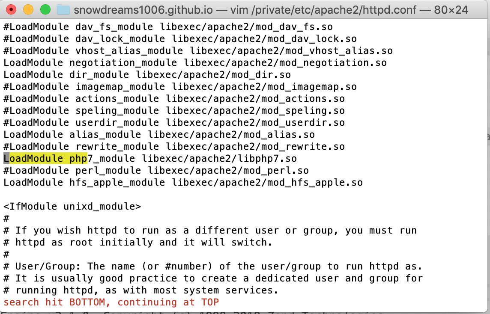
打开
httpd.conf配置文件并搜索LoadModule php字符串,将前面的#去掉即可引入php支持,配置文件修改后记得重启才能生效哟!
是时候展示真正的技术了,现在万事俱备只待测试 php 到底有没有配置成功?!
在项目部署根目录下新建 info.php 测试文件,启动服务器后访问
http://localhost/info.php 如果能正常打印出 php 相关信息,那就证明 php 和 apache 整合无误,否则可能是某一步配置有误!
phpinfo();
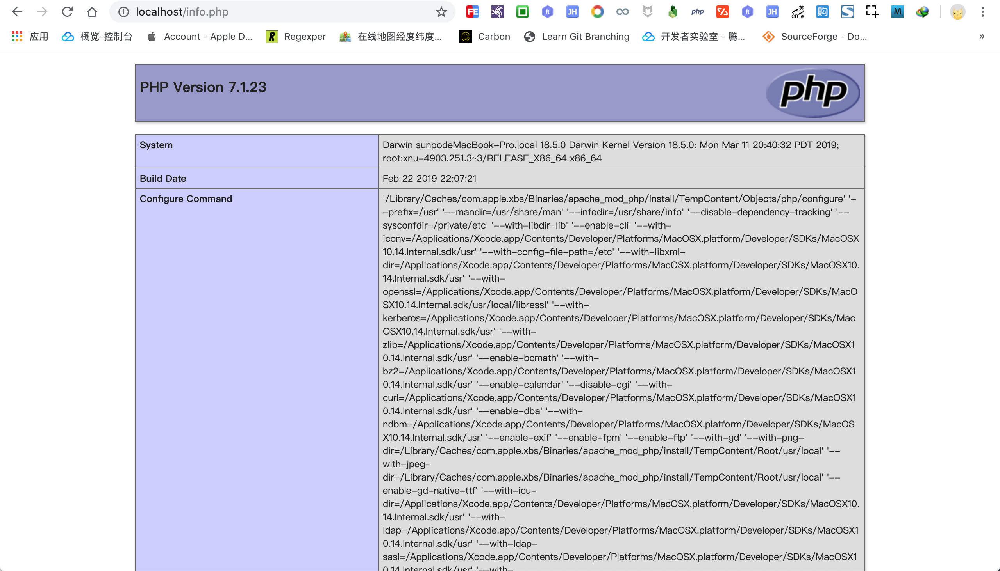
1.3. 持久化存储之 mysql 数
Mac 系统并没有默认安装 mysql 服务,因此我们需要手动安装 mysql .
一般来说,我们谈到 mysql 数据库指的是 mysql 的服务端,作为生产环境服务端足够了并不需要客户端.
但是,日常开发中如果没有客户端我们很难直观管理数据,所以一般来说,我们还会安装 mysql 客户端,当然一般是各种功能强大的图形化工具.
1.3.1. mysql 服务端
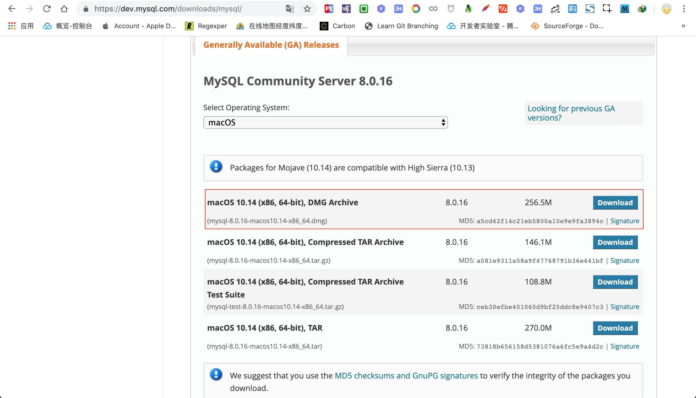
和正常的软件安装一样,将安装文件移动到应用里即可完成,比 Windows 的下一步下一步安装还要方便快捷!
安装完成后,可以在系统偏好设置中找到 MySQL 图标,查看管理 mysql 服务端.
点击 MySQL 图标,可以进行简单的设置以及重启服务等操作.
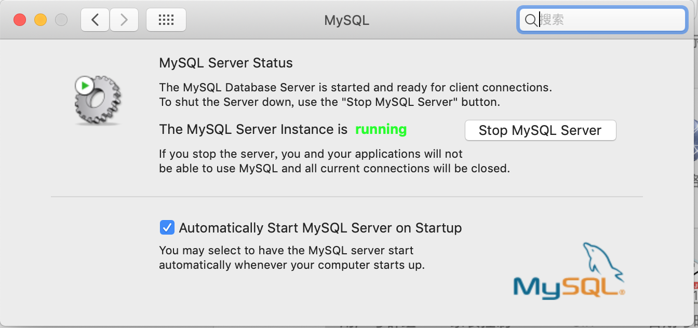
但是如果想要在终端中无痛连接上 mysql 服务端,那么还需要一步设置软链接,类似于 Windows 的快捷方式.
$ sudo ln -fs /usr/local/mysql/bin/mysql /usr/local/bin/mysql
现在我们就可以在终端内愉快的连接上 mysql 服务端了呢!
# 登录 `mysql` 服务端
$ mysql -u root -p
Enter password:
Welcome to the MySQL monitor. Commands end with ; or \g.
Your MySQL connection id is 29
Server version: 5.7.24 MySQL Community Server (GPL)
Copyright (c) 2000, 2018, Oracle and/or its affiliates. All rights reserved.
Oracle is a registered trademark of Oracle Corporation and/or its
affiliates. Other names may be trademarks of their respective
owners.
Type 'help;' or '\h' for help. Type '\c' to clear the current input statement.
# 查看当前数据库列表
mysql> show databases;
+---------------------+
| Database |
+---------------------+
| information_schema |
| mysql |
| performance_schema |
| security-plus |
| sys |
| test |
+---------------------+
6 rows in set (0.00 sec)
# 退出当前数据库会话
mysql> exit
Bye
$
- 查看
mysql服务端版本
语法:
mysql --version
示例:
$ mysql --version
mysql Ver 14.14 Distrib 5.7.24, for macos10.14 (x86_64) using EditLine wrapper
- 查看
mysql服务端状态
语法:
sudo /usr/local/mysql/support-files/mysql.server status
示例:
$ sudo /usr/local/mysql/support-files/mysql.server status
SUCCESS! MySQL running (73088)
- 启动
mysql服务端
语法:
sudo /usr/local/mysql/support-files/mysql.server start
示例:
$ sudo /usr/local/mysql/support-files/mysql.server start
Starting MySQL
. SUCCESS!
- 停止
mysql服务端
语法:
sudo /usr/local/mysql/support-files/mysql.server stop
示例:
$ sudo /usr/local/mysql/support-files/mysql.server stop
Shutting down MySQL
.. SUCCESS!
- 重启
mysql服务端
语法:
sudo /usr/local/mysql/support-files/mysql.server restart
示例:
$ sudo /usr/local/mysql/support-files/mysql.server restart
Shutting down MySQL
. SUCCESS!
Starting MySQL
. SUCCESS!
1.3.2. mysql 客户端
如果说生产环境没有 mysql 的图形化工具也就罢了,但是如果日常开发时也不没有图形化工具的话,那就真的太不方便了.
这里推荐两个客户端工具,一个是人畜无害的 Sequel Pro,另一个则是 php 专属的 phpMyAdmin.
BS架构的phpMyAdmin
下载地址 : phpMyAdmin
phpMyAdmin 是一款 web 版数据款管理软件,可以在浏览器中在线访问,像访问你的网站一样访问数据库.
下载完成后解压并重命名为 phpMyAdmin,然后移动到 apache 的项目部署路径下,如果没有更改过默认的部署路径,那么应该是 /Library/WebServer/Documents 目录.
现在部署路径下不仅有个 info.php 文件还有 phpMyAdmin 文件夹.
# 仅仅显示两级文件目录
$ tree -L 2
.
├── PoweredByMacOSX.gif
├── PoweredByMacOSXLarge.gif
├── index.html.en
├── index.html.en~orig
├── info.php
└── phpMyAdmin
├── CODE_OF_CONDUCT.md
├── CONTRIBUTING.md
├── export.php
├── favicon.ico
├── gis_data_editor.php
├── import.php
├── import_status.php
├── index.php
├── view_operations.php
└── yarn.lock
11 directories, 108 files
移动完成后先复制一份 config.sample.inc.php 文件并重命名为 config.inc.php 文件.
执行 vim /Library/WebServer/Documents/phpMyAdmin/config.inc.php 搜索并编辑 host 节点内容,将 localhost 更改成 127.0.0.1 .
示例:
# 修改前
$cfg['Servers'][$i]['host'] = 'localhost';
# 修改后: 将 `localhost` 更改成 `127.0.0.1`
$cfg['Servers'][$i]['host'] = '127.0.0.1';
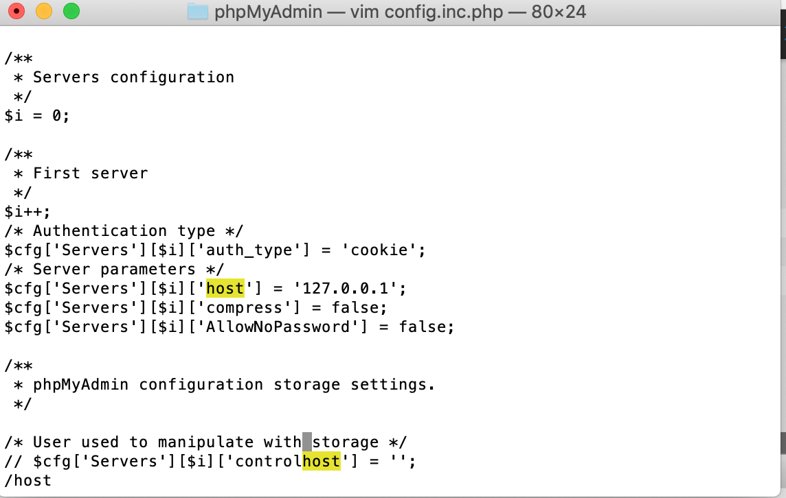
重启 apache 服务,访问 http://localhost/phpMyAdmin/ 开始登陆数据库吧!
输入 mysql 的用户名和密码登录成功后就能管理本地数据库了.
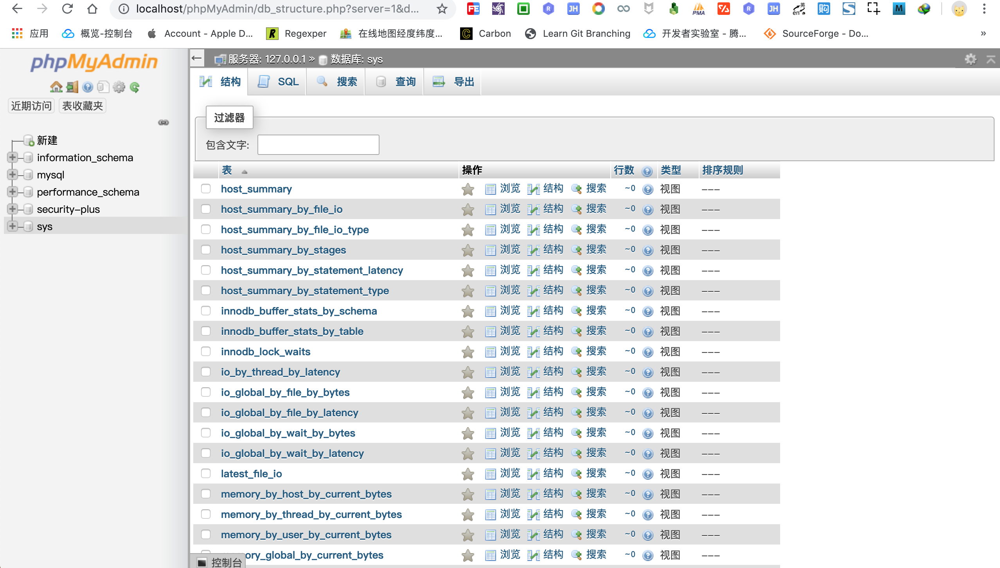
CS架构的Sequel Pro
下载地址 : v1.1.2 OS X 10.6 or Higher
Sequel Pro 是简单易用的数据库管理工具,与上述的 phpMyAdmin 不同之处在于并不依赖 php 环境,可以独立安装部署.
安装完成后输入数据库连接信息连接到本地数据库,参考信息如下.
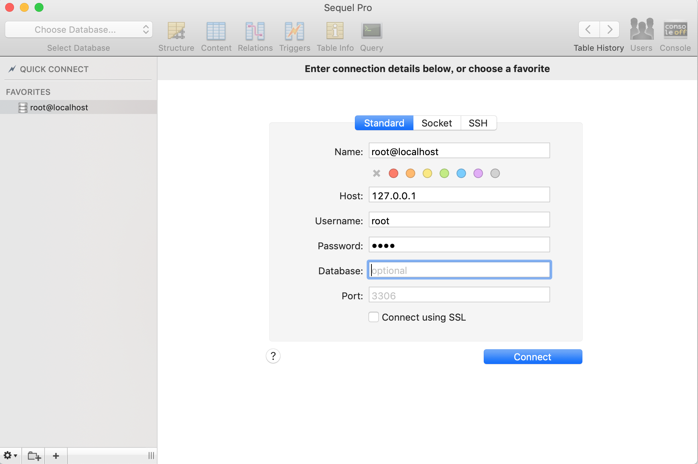
点击连接(Connect) 连接到本地服务器,由于刚才并没有选择数据库,因此登陆后需要选定数据库,这里根据实际情况选择即可.
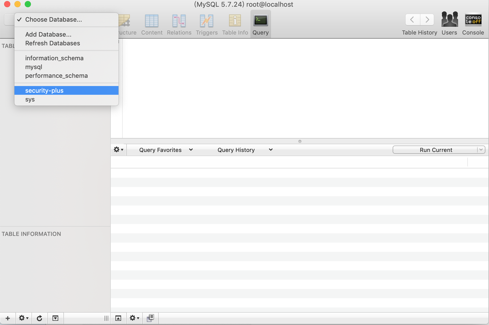
1.4. php 集成 mysql
如果没有数据库提供持久化存储能力,那么 php 只能临时运行而没有记忆功能,所以想要记住网站大量信息自然离不开数据库.
1.4.1. 准备数据
为了接下来演示 php 集成 mysql 数据库,现在先创建一个测试数据库并插入一些测试数据.
下面主要是通过终端方式进行操作,小伙伴们也可以使用上述安装的图形化工具进行可视化编辑.
- 连接到本地服务器
语法 :
mysql -u <username> -p
示例:
# 连接到本地数据库,用户名 `root`,密码自定义
$ mysql -u root -p
Enter password:
Welcome to the MySQL monitor. Commands end with ; or \g.
Your MySQL connection id is 109
Server version: 5.7.24 MySQL Community Server (GPL)
Copyright (c) 2000, 2018, Oracle and/or its affiliates. All rights reserved.
Oracle is a registered trademark of Oracle Corporation and/or its
affiliates. Other names may be trademarks of their respective
owners.
Type 'help;' or '\h' for help. Type '\c' to clear the current input statement.
- 列出当前数据库列表
语法 :
show databases
示例:
mysql> show databases;
+--------------------+
| Database |
+--------------------+
| information_schema |
| mysql |
| performance_schema |
| security-plus |
| sys |
+--------------------+
5 rows in set (0.00 sec)
- 创建测试数据库
语法 :
create database <databaseName>
示例:
# 创建 `test` 数据库并指定编码格式为 `utf8`
mysql> create database IF NOT EXISTS test default charset utf8 COLLATE utf8_general_ci;
Query OK, 1 row affected (0.00 sec)
# 再次查询当前数据库列表,新增 `test` 数据库
mysql> show databases;
+--------------------+
| Database |
+--------------------+
| information_schema |
| mysql |
| performance_schema |
| security-plus |
| sys |
| test |
+--------------------+
6 rows in set (0.00 sec)
- 列出当前数据表列表
语法 :
show tables
示例:
# 使用 `test` 测试数据库
mysql> use test;
Database changed
# 列出当前全部数据表
mysql> show tables;
Empty set (0.00 sec)
- 创建测试数据表
语法 :
create tabel <tableName> (<fieldName> <type>))
# 创建 `user` 用户表
mysql> CREATE TABLE `test`.`user` (
`id` BIGINT(11) UNSIGNED NOT NULL AUTO_INCREMENT COMMENT '用户 id',
`name` VARCHAR(45) NOT NULL DEFAULT '' COMMENT '姓名',
PRIMARY KEY (`id`),
UNIQUE INDEX `id_UNIQUE` (`id` ASC))
ENGINE = InnoDB
DEFAULT CHARACTER SET = utf8
COMMENT = '用户表';
Query OK, 0 rows affected (0.01 sec)
# 再次列出当前数据表列表
mysql> show tables;
+----------------+
| Tables_in_test |
+----------------+
| user |
+----------------+
1 row in set (0.00 sec)
- 查看数据表结构
语法 :
desc <tableName>
示例:
mysql> desc user;
+-------+---------------------+------+-----+---------+----------------+
| Field | Type | Null | Key | Default | Extra |
+-------+---------------------+------+-----+---------+----------------+
| id | bigint(11) unsigned | NO | PRI | NULL | auto_increment |
| name | varchar(45) | NO | | | |
+-------+---------------------+------+-----+---------+----------------+
2 rows in set (0.00 sec)
- 查看数据表创建语句
语法 :
show create table <tableName>
示例:
mysql> show create table user \G
*************************** 1. row ***************************
Table: user
Create Table: CREATE TABLE `user` (
`id` bigint(11) unsigned NOT NULL AUTO_INCREMENT COMMENT '用户 id',
`name` varchar(45) NOT NULL DEFAULT '' COMMENT '姓名',
PRIMARY KEY (`id`),
UNIQUE KEY `id_UNIQUE` (`id`)
) ENGINE=InnoDB DEFAULT CHARSET=utf8 COMMENT='用户表'
1 row in set (0.00 sec)
- 查询数据
语法 :
select [fields] from tableName [where condition] [limit N][ offset M]
示例:
mysql> select id,name from user;
Empty set (0.00 sec)
- 插入数据
语法 :
insert into <tableName> ([fields]) VALUES ([values])
示例:
mysql> INSERT INTO `test`.`user` (`name`) VALUES ('snowdreams1006');
Query OK, 1 row affected (0.00 sec)
mysql> INSERT INTO `test`.`user` (`name`) VALUES ('雪之梦技术驿站');
Query OK, 1 row affected (0.00 sec)
mysql> INSERT INTO `test`.`user` (`name`) VALUES ('测试用户姓名');
Query OK, 1 row affected (0.00 sec)
mysql> select id,name from user;
+----+-----------------------+
| id | name |
+----+-----------------------+
| 1 | snowdreams1006 |
| 2 | 雪之梦技术驿站 |
| 3 | 测试用户姓名 |
+----+-----------------------+
3 rows in set (0.00 sec)
- 退出数据库
语法 :
exit
示例:
mysql> exit
Bye
$
- 导出数据
语法 :
mysqldump -u <username> -p <databaseName> > exportName.sql
备份数据用到的是 mysqldump 工具,默认情况下该命令位于 /usr/local/mysql/bin 目录下,正常情况下需要指定该路径才能调用 mysqldump 命令.
$ tree /usr/local/mysql/bin
/usr/local/mysql/bin
├── innochecksum
├── lz4_decompress
├── my_print_defaults
├── myisam_ftdump
├── myisamchk
├── myisamlog
├── myisampack
├── mysql
├── mysql_client_test_embedded
├── mysql_config
├── mysql_config_editor
├── mysql_embedded
├── mysql_install_db
├── mysql_plugin
├── mysql_secure_installation
├── mysql_ssl_rsa_setup
├── mysql_tzinfo_to_sql
├── mysql_upgrade
├── mysqladmin
├── mysqlbinlog
├── mysqlcheck
├── mysqld
├── mysqld-debug
├── mysqld_multi
├── mysqld_safe
├── mysqldump
├── mysqldumpslow
├── mysqlimport
├── mysqlpump
├── mysqlshow
├── mysqlslap
├── mysqltest_embedded
├── mysqlxtest
├── perror
├── replace
├── resolve_stack_dump
├── resolveip
└── zlib_decompress
0 directories, 38 files
所以,应该是如下命令才能调用 mysqldump 命令.
$ /usr/local/mysql/bin/mysqldump --version
mysqldump Ver 10.13 Distrib 5.7.24, for macos10.14 (x86_64)
不过这也太长了吧,肯定不是很不变,一劳永逸的方法是将 /usr/local/mysql/bin 加入到环境变量中就不用添加额外的路径信息了.
还记得 mysql 服务端刚安装完毕,我们想要通过终端连接到本地数据库服务器时设置了 mysql 的软链接,所以才能直接使用 mysql -u root -p 进行登录.
mac 的软链接方式相当于 windows 系统的快捷方式,只针对具体命令,现在需要 mysqldump 命令,继续使用软链接还要添加类似的快捷方式.
$ sudo ln -fs /usr/local/mysql/bin/mysql /usr/local/bin/mysql
$ sudo ln -fs /usr/local/mysql/bin/mysqldump /usr/local/bin/mysqldump
实测可用,但是这并不是优雅的操作方式,/usr/local/mysql/bin/ 目录下那么多命令,下次需要用到其他命令岂不是要设置很多软链接?
$ mysqldump --version
mysqldump Ver 10.13 Distrib 5.7.24, for macos10.14 (x86_64)
所以,现在我们考虑将 /usr/local/mysql/bin 加入到系统环境变量中,这样一来就能一劳永逸不用频繁设置软链接了!
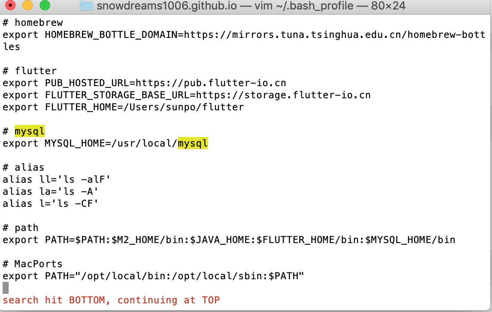
# mysql
export PATH=$PATH:/usr/local/mysql/bin
设置完毕后下次重启电脑就会生效,或者运行下述命令立即生效.
$ source ~/.bash_profile
为了测试环境变量是否生效,我们先删除原来的软链接.
$ rm -rf /usr/local/bin/mysql
$ rm -rf /usr/local/bin/mysqldump
依然能够正常调用 mysql 相关命令.
# `mysql` 版本信息
$ mysql --version
mysql Ver 14.14 Distrib 5.7.24, for macos10.14 (x86_64) using EditLine wrapper
# `mysqldump` 版本信息
$ mysqldump --version
mysqldump Ver 10.13 Distrib 5.7.24, for macos10.14 (x86_64)
示例:
$ mysqldump -u root -p test > database_test.sql;
Enter password:
$
注意 :
mysqldump和mysql相互独立的命令行程序,并不是在mysql会话中执行的sql. 查看当前备份文件内容:
# 备份文件位于当前目录
$ cat $(pwd)/database_test.sql
备份 sql 文件内容,可以直接复制执行.
-- MySQL dump 10.13 Distrib 5.7.24, for macos10.14 (x86_64)
--
-- Host: localhost Database: test
-- ------------------------------------------------------
-- Server version 5.7.24
/*!40101 SET @OLD_CHARACTER_SET_CLIENT=@@CHARACTER_SET_CLIENT */;
/*!40101 SET @OLD_CHARACTER_SET_RESULTS=@@CHARACTER_SET_RESULTS */;
/*!40101 SET @OLD_COLLATION_CONNECTION=@@COLLATION_CONNECTION */;
/*!40101 SET NAMES utf8 */;
/*!40103 SET @OLD_TIME_ZONE=@@TIME_ZONE */;
/*!40103 SET TIME_ZONE='+00:00' */;
/*!40014 SET @OLD_UNIQUE_CHECKS=@@UNIQUE_CHECKS, UNIQUE_CHECKS=0 */;
/*!40014 SET @OLD_FOREIGN_KEY_CHECKS=@@FOREIGN_KEY_CHECKS, FOREIGN_KEY_CHECKS=0 */;
/*!40101 SET @OLD_SQL_MODE=@@SQL_MODE, SQL_MODE='NO_AUTO_VALUE_ON_ZERO' */;
/*!40111 SET @OLD_SQL_NOTES=@@SQL_NOTES, SQL_NOTES=0 */;
--
-- Table structure for table `user`
--
DROP TABLE IF EXISTS `user`;
/*!40101 SET @saved_cs_client = @@character_set_client */;
/*!40101 SET character_set_client = utf8 */;
CREATE TABLE `user` (
`id` bigint(11) unsigned NOT NULL AUTO_INCREMENT COMMENT '用户 id',
`name` varchar(45) NOT NULL DEFAULT '' COMMENT '姓名',
PRIMARY KEY (`id`),
UNIQUE KEY `id_UNIQUE` (`id`)
) ENGINE=InnoDB AUTO_INCREMENT=4 DEFAULT CHARSET=utf8 COMMENT='用户表';
/*!40101 SET character_set_client = @saved_cs_client */;
--
-- Dumping data for table `user`
--
LOCK TABLES `user` WRITE;
/*!40000 ALTER TABLE `user` DISABLE KEYS */;
INSERT INTO `user` VALUES (1,'snowdreams1006'),(2,'雪之梦技术驿站'),(3,'测试用户姓名');
/*!40000 ALTER TABLE `user` ENABLE KEYS */;
UNLOCK TABLES;
/*!40103 SET TIME_ZONE=@OLD_TIME_ZONE */;
/*!40101 SET SQL_MODE=@OLD_SQL_MODE */;
/*!40014 SET FOREIGN_KEY_CHECKS=@OLD_FOREIGN_KEY_CHECKS */;
/*!40014 SET UNIQUE_CHECKS=@OLD_UNIQUE_CHECKS */;
/*!40101 SET CHARACTER_SET_CLIENT=@OLD_CHARACTER_SET_CLIENT */;
/*!40101 SET CHARACTER_SET_RESULTS=@OLD_CHARACTER_SET_RESULTS */;
/*!40101 SET COLLATION_CONNECTION=@OLD_COLLATION_CONNECTION */;
/*!40111 SET SQL_NOTES=@OLD_SQL_NOTES */;
-- Dump completed on 2019-05-19 12:49:35
- 导入数据
语法 :
source <mysqldump.sql>
示例:
# 创建 `test_import` 数据库
mysql> create database test_import;
# 使用 `test_import` 数据库
mysql> use test_import;
# 导入 `database_test.sql` 文件
mysql> source /Users/sunpo/Documents/workspace/snowdreams1006.github.io/database_test.sql
- 删除数据库
语法 :
drop database <databaseName>
示例:
mysql> drop database test_import;
Query OK, 1 row affected (0.01 sec)
1.4.2. 编程连接
如果没有更改过项目的部署路径,那么我们之前有个测试 php 环境的文件,即 /Library/WebServer/Documents/info.php ,现在我们继续编写该文件,通过编码的方式连接到 mysql 数据库.
$username="root";
$userpass="root";
$dbhost="127.0.0.1";
$dbdatabase="test";
// 连接到本地服务器
$db=new mysqli($dbhost,$username,$userpass,$dbdatabase);
$db->set_charset("utf8");
if(mysqli_connect_error()){
echo "连接失败: " . mysqli_connect_error();
exit;
}
# 查询用户列表
$result = $db->query("SELECT id,name FROM user");
if ($result->num_rows > 0) {
// 输出数据
while($row = $result->fetch_assoc()) {
echo var_dump($row). "<br>";
}
}
# 关闭数据库连接
$db->close();
phpinfo();
现在再次启动 apache 服务器,访问 http://localhost/info.php 测试成功!
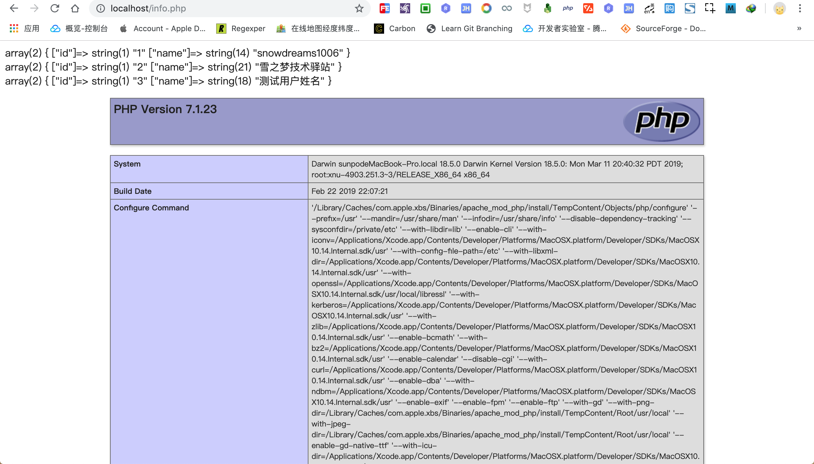
1.5. 环境搭建要点总结
apache 服务默认已安装,启动服务器后,在浏览器中访问 http://localhost/ 会显示It works!,表明 apache 能正常使用.
- 查看
apache服务器版本 :apachectl -v - 启动
apache服务器 :sudo apachectl start - 停止
apache服务器 :sudo apachectl stop - 重启
apache服务器 :sudo apachectl restart apache服务器安装路径 :/private/etc/apache2apache服务器部署路径 :/Library/WebServer/Documents
php 服务默认已安装,集成到 apache 服务器只需要在 /private/etc/apache2/httpd.conf 配置文件中启用 LoadModule php7_module libexec/apache2/libphp7.so 模块即可,重启 apache 服务器即可支持 php 环境.
- 查看
php版本信息 :php -version php默认配置文件路径 :/private/etc/php.ini.default
mysql 数据库默认没有安装,需要手动前往 https://www.mysql.com/downloads/ 官网进行下载安装.
如果需要在终端命令行内访问 mysql 服务端,最好将 mysql 的安装路径添加到系统环境中,或者添加软链接也可以.
mysql安装路径 :/usr/local/mysql- 系统环境变量路径 :
~/.bash_profile mysql二进制文件添加到系统环境变量 :export PATH=$PATH:/usr/local/mysql/bin- 刷新系统环境变量配置 :
source ~/.bash_profile mysql命令添加软链接 :sudo ln -fs /usr/local/mysql/bin/mysql /usr/local/bin/mysql- 查看
mysql服务器状态 :sudo mysql.server status - 启动
mysql服务器 :sudo mysql.server start - 停止
mysql服务器 :sudo mysql.server stop - 重启
mysql服务器 :sudo mysql.server restart - 查看
mysql版本信息 :mysql --version - 登录
mysql服务器 :mysql -u root -p - 退出
mysql服务器 :exit
最后,php 不仅仅可以面向过程也可以面向对象,虽然是拍簧片,但真的很强大,魅力不小呢!